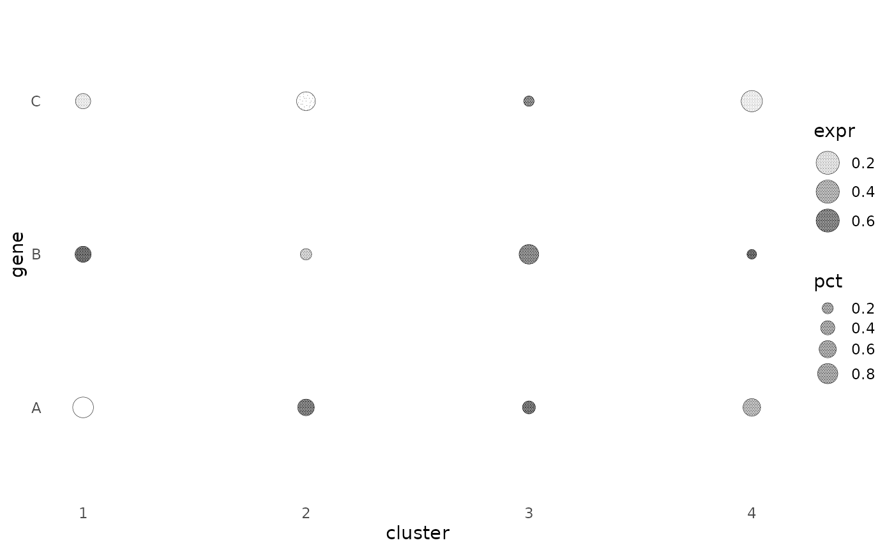

Each point becomes a disc of radius r mm (or aes(size = ), in mm) filled with a halftone whose tone is the
point's value. Use it for a dot plot in which a second quantity is shown by ink density instead of a colour ramp.
Each disc has its own centred hex lattice, clipped to the disc, and a ring in the disc's colour.
Usage
geom_spot(
mapping = NULL,
data = NULL,
stat = "identity",
position = "identity",
...,
r = 3,
pitch = 0.35,
levels = NULL,
bayer_n = 4,
dot_max = 0.9,
range = NULL,
ring = TRUE,
ring_lwd = 0.3,
min_feature = 0.09,
angle = NULL,
shape = "circle",
na.rm = FALSE,
show.legend = NA,
inherit.aes = TRUE
)
# S3 method for class 'spot'
makeContent(x)Arguments
- mapping
Set of aesthetic mappings created by
aes(). If specified andinherit.aes = TRUE(the default), it is combined with the default mapping at the top level of the plot. You must supplymappingif there is no plot mapping.- data
The data to be displayed in this layer. There are three options:
If
NULL, the default, the data is inherited from the plot data as specified in the call toggplot().A
data.frame, or other object, will override the plot data. All objects will be fortified to produce a data frame. Seefortify()for which variables will be created.A
functionwill be called with a single argument, the plot data. The return value must be adata.frame, and will be used as the layer data. Afunctioncan be created from aformula(e.g.~ head(.x, 10)).- stat
The statistical transformation to use on the data for this layer. When using a
geom_*()function to construct a layer, thestatargument can be used to override the default coupling between geoms and stats. Thestatargument accepts the following:A
Statggproto subclass, for exampleStatCount.A string naming the stat. To give the stat as a string, strip the function name of the
stat_prefix. For example, to usestat_count(), give the stat as"count".For more information and other ways to specify the stat, see the layer stat documentation.
- position
A position adjustment to use on the data for this layer. This can be used in various ways, including to prevent overplotting and improving the display. The
positionargument accepts the following:The result of calling a position function, such as
position_jitter(). This method allows for passing extra arguments to the position.A string naming the position adjustment. To give the position as a string, strip the function name of the
position_prefix. For example, to useposition_jitter(), give the position as"jitter".For more information and other ways to specify the position, see the layer position documentation.
- ...
Other arguments passed to
ggplot2::layer(), such as fixed aesthetics (colour = "black").- r
Disc radius in mm when
sizeis not mapped.- pitch
Lattice spacing inside the discs, in mm.
- levels
NULLfor continuous tone (dot area follows tone exactly). An integer quantises tone to that many steps and dithers the remainder withalgorithm;levels = 1is a binary stipple.- bayer_n
Size of the Bayer matrix when
algorithm = "bayer".- dot_max
Diameter of a full-tone dot as a fraction of
pitch(0.9). Above 1 dots merge; it is the ink weight of the screen at 100 % tone. For line screens it is the full-tone strip width, as a fraction of pitch.- range
Value range mapped to tone 0..1 when
zis used;NULLuses the data range. A wider range lightens the screen.- ring
Draw the disc outline.
- ring_lwd
Line width of the ring.
- min_feature
Smallest printable feature in mm (0.09, i.e. 0.25 pt, the minimum line weight in journal artwork guidelines; see References). A cell whose dot would be smaller prints at the floor with probability tone/floor, so coverage is preserved and light tone becomes sparse minimum dots or broken hairlines. Hatch strips are never thinner. Set to 0 to disable.
- angle
Rotation of the rosette in degrees;
NULLmeans 15 for dots and 45 for hatching. Added to a mappedscreenspec's angle only when given.- shape
"circle","square","diamond"or"line"(hatched discs, for one-ink dot plots).aes(screen = )withscale_screen_discrete()varies angle and shape per group.- na.rm
Remove missing values silently.
- show.legend
logical. Should this layer be included in the legends?
NA, the default, includes if any aesthetics are mapped.FALSEnever includes, andTRUEalways includes. It can also be a named logical vector to finely select the aesthetics to display. To include legend keys for all levels, even when no data exists, useTRUE. IfNA, all levels are shown in legend, but unobserved levels are omitted.- inherit.aes
If
FALSE, overrides the default aesthetics, rather than combining with them. This is most useful for helper functions that define both data and aesthetics and shouldn't inherit behaviour from the default plot specification, e.g.annotation_borders().- x
A
spotgrob (internal;makeContentmethod).
Details
Tone comes from aes(tone = ) through scale_tone_continuous(), which gives it a legend of discs at the breaks,
or from aes(z = ) normalised inside the geom.
Examples
d <- expand.grid(gene = c("A", "B", "C"), cluster = 1:4); d$expr <- runif(12); d$pct <- runif(12)
ggplot2::ggplot(d, ggplot2::aes(cluster, gene, tone = expr, size = pct)) + geom_spot() +
scale_tone_continuous() + ggplot2::scale_radius(range = c(1, 2.2)) + ggplot2::theme_minimal() + theme_halftone()
